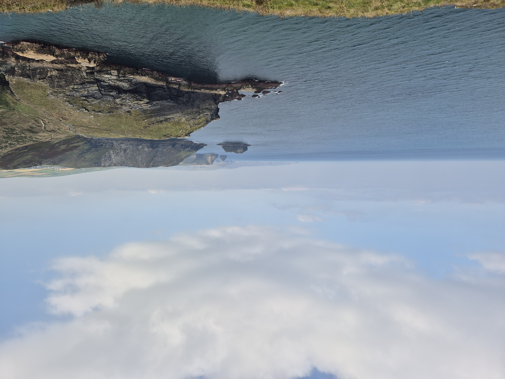
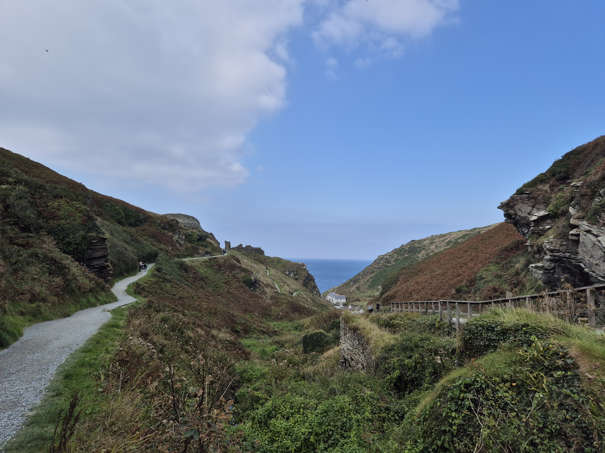

Madeira: the Island of Eternal Spring
Let me tell you what happens when you Google "November hiking destinations": you end up in the lovely Madeira, Portugal. Maybe it won't be as easy as all that and you plan 75% of a trip to Slovenia, Croatia, Bosnia and Montenegro that you suspend because of the planned closure of the Vršič Pass, but Madeira will be the final result. If you haven't heard of Madeira, its an autonomous Portuguese archipelago found in the Atlantic between the Azores and the Canary Islands. Its capital, Funchal, has an international airport that helps make it such a popular spot for tourists coming from Europe, along with its year-round amenable weather.
We followed the Madeira portion of the vacation with a short stay in Portugal that I'll cover in another post. Other destinations that came up in our initial search were: Canary Islands (starting to see a theme here), the Algarve coast in mainland Portugal, Crete (island again), Malta (seriously?), Morrocco, Jordan, Patagonia and Machu Picchu.
The age old question: how many days should I stay in Madeira?
One of the first things I always do when I start planning a trip, is ask this very question: how many days should we spend on a given destination? I found its common to find a variety of answers but in Madeira's case, it seems to be particularly varied. The ideal amount went from 2 days to 2+ weeks. Everybody has different criteria to determine the amount of time they will spend visiting a new (or not so new) place. For us, and many who visit Madeira, it was nature.
Nature is the main attraction in Madeira. It has several microclimates that go with the diverse geography. So, you can find an assortment of landscapes to enjoy in the relatively small main island of the archipelago. We had flexibility when it came to dates and prioritized finding things to do that excited us (mainly hikes) and ordering them into a relatively reasonable schedule.
Having said all that, I give you the 12 day itinerary. Some may say its a random number and it is. But it worked for us.
12-day itinerary
Preface: Transport and luggage
As I mentioned before, Funchal is accesible by plane from many European big cities as well as New York in the States. We set out very early on the British Airways direct flight from London Gatwick to the Cristiano Ronaldo International Airport in Funchal. If your algorithm is anything like mine, you maybe got some of the videos of planes landing at this airport. Pilots must receive extra training to be allowed to land at this airport. As I understand it, the airport's notoriety is caused by a mix of strong wind due to the island's geography, its position on the islands edge and the length of the runway (which has be extended a number of times throughout the years). Nowadays, incidents on the runway are rare and we arrived safely in Madeira.
Another of the typical questions I investigate pre-trip is: should we rent a car? I love and prefer living on a walkable city with great public transport but understand that that might not be the case in many vacation destinations. In Madeira's case, other bloggers seemed quite adamant that renting a car was the way to go for the island. After assembling the itinerary, judging distances and looking into road conditions, I was convinced of the same. For us, it was the right call allowing us flexibility and the ability to get to more out of the way places. We did save a few bucks by returning it on the second day we were in Funchal towards the end of the trip. During the last few days, we mainly walked and Ubered.
We reserved a car from Sixt. The pick up process at the airport went generally fine but the salesperson was very pushy regarding an upgrade. So, we ended up caving and ended up with the Puma instead of a smaller car. The argument was that the roads in Madeira have a lot of ups and down. So a car with a stronger engine would serve us better. To this day, I'm not sure if that would have been really necessary for our trip. We saw way smaller cars all over the island in all types of roads and gradients. I recommend considering what you feel more confortable with, choosing that from the beggining and then staying firm on the rental desk.
In regards to driving in Madeira, we had no mayor issues with either the driving itself or the navigation. A curious detail is that, when you look at the map in Google Maps, there seems to be some overlapping roads that look kind of strange. These are usually roads that go through tunnels underneath with the roads that go above at land level superimposed.
Another important detail we had to think through for us was what to do with the luggage. Because of our plans following the trip, we had our big luggage with us that had many things (like winter clothes) that would not be at all useful in Madeira. So we planned to travel only with our carry ons and leave our bigger luggage at a Bounce luggage storage affiliated place. We had used the app before with no issues. Specifically, we chose the location right by the CR7 museum (the Cristiano Ronaldo museum) that had good ratings. We picked them back up when we were back in Funchal as the last stop in our itinerary.
Second preface: hiking
What is a levada and what is vereda what are PR well marked trails Check hiking conditions: https://ifcn.madeira.gov.pt/pt/atividades-de-natureza/percursos-pedestres-recomendados/percursos-pedestres-recomendados.htmlDay 1: full day including arrival
We left London very early and 4 hours later, we touched down in Funchal. After renting the car, we drove to Funchal to drop of our extra luggage. Our first stop was "PR8 Vereda da Ponta de São Lourenço". We found that hikes in madeira were numbered in a very useful manner and identified along the trail by this numbers as well. On the drive to the starting point, we stopped at a supermarket to get a few supplies, including some lunch.
We also stopped at a viewpoint ("miradouro" in Portuguese), specifically at Miradouro de Machico on the outskirts of Machico. Alternative viewpoints are Miradouro Francisco Álvares de Nóbrega and Miradouro da Portelinha with similar views. From there, we continued to the car park and started the hike.
PR8 Vereda da Ponta de São Lourenço information
- There is parking lot at the start of the trail: Parking location
- Official site here
- AllTrails link here. There are other similar trails in the area that might be useful as well.
- Length: 3 km one-way (6km round trip) / 1.86 mi (3.73 mi)
- Estimated duration: 2.5hs
- Elevation gain: 300 m
- Moderate difficulty
- Price: 4,50 € (can be paid in advance in the Official site listed above)
The climate in the area results in an arid landscape with scarce vegetation. The coastline of the peninsula is a sight to behold as are the views from it. We did not manage to finish it because we were extremely tired after the week we had before and the early start that day, but the portion we did complete was beautiful. There are a few viewpoints a along to way.
After this, we planned to stop at Miradouro da Portela on our way to the Airbnb. But we took the wrong, shorter way and weren't able to stop there. But its something worth considering if you are following a similar itinerary. There a few other miradouros on the road where the Miradouro da Portela is.
We finally made it to our Airbnb: a very practical and neat 1-bedroom apartment, part of a larger property (it seemed a family home). It had everything we needed to stay for a few days, a complete kitchen and was very spacious for two people. It was very conveniently located near Santana (a place we planned to visit ont the following days) and half a block away from a large Continente supermarket, which we frequented daily for the pastries.
Day 2: Boca do Risco Hike
For our first full day in Madeira, we headed to the Vereda do Larano (like "Miradouro", the word "vereda" will appear quite a bit in this blog. It means footpath or trail, in these contexts). We drove to where the AllTrails path indicated it started and parked on the side of the street. We originally tried to park on the side of one of the houses there. But the owner/inhabitant of the place quickly kicked us out. I don't think that its a great parking spot given that the road is narrow enough that a car parked in the side of is cumbersome to other drivers. And it probably gets worse the more people arrive there as the day goes on. It may be worth asking around, ideally at a tourism office, to see if there are alternative parking spots that are more appropriate.
Levada do Larano and Boca do Risco trail information
- We followed this AllTrails path.
- Length: 11.9km (7.4mi) (out and back)
- Estimated duration: 6hs
- Elevation gain: 1071m (0.7mi) (I'm not sure if this is correct, it didn't feel like this much elevation)
- Moderate difficulty
- Can be done as part of a longer hike/trail run. More information on this can de found here, here and here.
The cliffside trail is fairly flat and runs along one of the borders of the island. It offers stunning coastline views and leads you to a viewpoint where you can sit to enjoy to rest (on one of the many rocks) and enjoy. Having started around 9, we finished the walk around 13hs. After that, we stopped by a beach in the area I have not been able to find in Google Maps. It might be this one but I'm not sure. I would not recommend it to hang out; it seemed more like a surfing beach. It had medium sized rocks that were difficult to walk in and uncomfortable to sit on. But we loved soaking our overheated feet in the sea for a while after the hike.
Depending on your pace, this day has time for more exploring. A good options is visiting Porto da Cruz and the nearby miradouros of the area.
We stayed on the same Airbnb as the night before.
Day 3: Levada dos Balcões + Santana
We started day 3 by heading to PR11 Levada dos Balcões. On the way, we stopped at the Ponte da Ribeira d'Ametade (also known as "Ponte Velha"), an old stone bridge from the 40s that contrasts beautifully with the surrounding greenery. We parked where the Maps pin is for the hike, here, on the side of the street. Unfortunately, or not, as soon as we parked, it started raining. We waited in the car for a bit to see if it would let up. And it did, to some extent. When it had slowed down to a drizzle, we donned our rain gear and ventured into the trail.
PR11 Levada dos Balcões information
- Official site
- AllTrails
- Distance: 1.5 km (3 km round trip)
- Difficulty: Easy
- Duration: 1:30 hours
- Start/End: E.R. 103 (Ribeiro Frio) / Balcões
- Max. Altitude / Min. Altitude: 880 m / 870 m
It turned out that the rain was a positive factor, because we had the trail mostly to ourselves and we had a full double rainbow when we arrived at the viewpoint. While we were there, the sum came out. So we we got to see the wonderful view with the rainbow and rain as well as with the sun shining. We found the hike very easy, flat and short with a great view, so I highly recommend it.
For the rest of the day, we planned on hitting a few miradouros and the town of Santana. First, we headed to Miradouro do Guindaste. On the way, we stopped at Ponte Velha do Faial. When we arrived at the Miradouro do Guindaste, we parked the car in the parking lot and wandered around taking in the view. Its a great viewpoint that's easy to access, easy to park in and has great views. Do bear in mind, it is quite popular and can be crowded.
After that, we went up, up, up through many switchbacks (a Madeira staple), to Miradouro do Curtado where we took a bunch of selfies and enjoyed having the viewpoint all to ourselves. The last viewpoint we wanted to go to was Miradouro de Nossa Senhora dos Bons Caminhos but we were starving and decided to skip it in favour of the visit to Santana.
Once in the lovely village of Santana, we parked the car on the street and had a bite to eat and a coffee. with our bellies full, we visited the thatched roofed houses that Santana is famous for. You can find them on Maps here and here.
Our last stop of the day was at Rocha do Navio, or rather at the Miradouro da Rocha do Navio. The name 'Rocha do Navio' comes from a Dutch shipwreck that occurred there in the 19th century. I don't know why I was unable to comprehend exactly what Rocha do Navio was before visiting. In addition to the generalized confusion, I thought that we could take the Teleférico da Rocha do Navio down to sea-level. But the cable car was closed at the time. I'm not sure if it was a seasonal thing or some other reason. Furthermore, the trail down had a sign that said it was also closed due to cliff erosion. What we ended up doing was driving to this pin on the map, parked the car on the street and we enjoyed the viewpoint.
The view from the miradouro is really stunning. So much so, we decided to go back the next day to see the sunrise there.
Day 4: Cadeira Verde
Originally, we had a singular plan for this day: PR 9 Levada do Caldeirão Verde. But, as I mentioned a few paragraphs back, we wanted to see the sun rise from the sea from the Miradouro da Rocha do Navio. So we got up early and went over to the viewpoint. The day was a bit cloudy but it was still a lovely sunrise (and not the only one we enjoyed during our trip in Madeira).
Recommendation: We got there around 8 AM and parked the car right by the only other two cars in the lot. When we were entering the parking lot, a machine gave us a ticket that we used to pay for the parking before leaving (CASH ONLY). The early start turned out to be a great advantage for the day's main attraction. When we were leaving after hiking the parking lot was filled to the brim and many were leaving because they could not park. The trail was also noticeably more crowded on the way back. Which can slow you down given the trail has a few spots that are narrow and only allow single file.
Like I said, we got there around 8 AM and started our hike.
PR9 Levada do Caldeirão Verde information
- Official site
- AllTrails
- Distance
- To Caldeirão Verde: 6.5 km (13 km round trip)
- To Caldeirão do Inferno: 8.7 km (17.4 km round trip)
- Difficulty: Moderate
- Duration: 6:30 hours
- Max. Altitude / Min. Altitude: 1020 m / 872 m
- Start here
- Prices
- 4,50 € - Visitor > 12 years (You have to reserve you time slot in advance here)
- Parking: 2,00 € / hour
This was one of our favourite trails in Madeira. The trail follows the levada and offers lovely views from high in the island. It also adds a bit of adventure with some pitch black tunnels. We used our phone flashlights but some people recommend taking head flashlights, to leave your hands free. The trail, as seen in the pictures included, can be relatively narrow and we paased a few sections were there was water falling directly on top of us. It remains relatively flat most of the way. We had lunch on the Caldeirão Verde. The trail continuing to Caldeirão do Inferno was closed at the time and I beleive it remains closed to this day. We finished the hike around 13hs.
Since we finished with the walk earlier than expected, we ended up heading over to the Ruínas de São Jorge and the beach right by them, Praia de São Jorge. The place was fine, we weren't blown away by it, but it can be cute spot to have a snack and look at the sea. The beach has medium sized rocks that are not the most confirtable for sitting directly on, so we walked around in the area a bit.
This was our last night in Santana, so we had to pack up our things to leave the following day.
Day 5: going to Porto Moniz + many stops
On this day, we had to go from the Porto da Cruz/Santana area to the Porto Moniz area. We planned many stops along the way but cut back some of them the day of. Like I mentioned before, Madeira has "parallel" routes on some places. Calling them parallel feels weird because, usually, on of them looks like a toddler drew it and the other seems more straightforward. To reach a few of the places on our daily itinerary we had to take the long and squiggly route.
The first stops were Miradouro da Beira da Quinta closely followed followed by Miradouro da Santinha and the Miradouro de São Cristovão. The three viewpoints were nice but at this point we started feeling we would not be able to hit every place on our list.
We followed this with a stop in San Vicente, a small town on the nort side of the island. There we visited the chapel calledCapelinha de Nossa Senhora de Fátima. To reach it there a few flights of stairs and there's a view from the chapel deck. It's a spot recommended for sunsets (we were there before noon, so can't attest to that specific scenario). We also had the São Vicente Caves on the list, but they were closed (and I believe they still are).
The Miradouro do Véu da Noiva was next. It has its own parking lot with a couple of souvenir-type shops as well as a toilet in one of them. From the viewpoint, you can see a waterfall on the side of the cliffs to the right. Then it was time for our second town of the day: Seixal. We walked along the Promenade Seixal and had lunch in one of the restaurants along the street. From the promenade you have nice views of the natural pools.
The viewing deck in theMiradouro da Eira da Achada at Ribeira da Janela offered a pretty view but was a bit out of the way. We continued with Praia da Ribeira da Janela at which point it started ot drizzle. I suspect the last tqo stops would have been more enjoyable if the weather had been nicer, so they are worth considering for your itinerary in my opinion.
Next, we finally arrived at Porto Moniz. The coastal town's main attraction are a series of pools right by the ocean. You can find private and public pools catering to locals and tourists alike. When we arrived mid afternoon, the town was packed and we struggled to find parking. We had a plan for sunset, but had a little bit of time to kill, so we dropped off our stuff in the Airbnb and headed to the pools. We chose the public ones here. My partner swan around for a while and I took in the oceanic view.
After having a quick post-swin coffee, we headed to Miradouro do Ponta da Ladeira to watch the sut set on the ocean. From there you can start to see the western coastline, where the land drops abruptly. It was another cloudy day so the sunset was not as ostentatious as the pictures I saw online (look them up, they will not disappoint). But still a great way to end the day.
On the way back, we passed a supermarket where we got provisions for the next couple of days. The Airbnb we chose was okay, relatively small and not the most comfortable. It reminded me of other accomodations in coastal destinations I've been to. It was good enough for breakfast, dinner and sleeping.
Day 6: PR6 25 Fontes hike + Fanal
Another day, another hike. For day 6, we chose to go into the Paul da Serra plateau, one of Madeira's microclimates. I had found the recommendation to get there early, so early we went. We got there and were able to park with no problem. Now, I'm not sure what happened but we ended up following this AllTrails path, which is longer, steeper and generally harder. It was a nice walk but I did struggle a bit with the final ascent back to the parking lot. I would recommend following the signs and AllTrails for the Levada das 25 Fontes proper and will focus on that portion of the hike.
PR6 25 Fontes hike
- Official site
- AllTrails
- Distance: 4.3 km (8.6 km round trip)
- Difficulty: Moderate
- Duration: 3 hours
- Price: 4,5 € - Visitor > 12 years (book in advance here)
- Parking
- Max. Altitude / Min. Altitude: 1288 m / 964 m
The hike is moderate in difficulty with some altitude difference that requires more effort than the ones we had done so far. I still think is very begginer friendly and worth the trip to the area. It’s fairly short overall and leaves room for other activities during the day if you start early. So, after the hike, we headed over to the Fanal forest.
There is a trail you can follow in this area, the PR13 Vereda do Fanal. We did not have the energy to follow it, so we headed directly to the last part of the trail and parked the car here. From there we followed the people and explored the area. Some recommend visiting the site early in the morning, when there is fog giving the witchy vides are spot on. One of the signature features are the trees, some are shaped like people posing. We also climbed up the hill to enjoy views from the top. It's a short but steep ascent but worth it.
The sun started shining when we were descending the hill, so we laid down in the grass and read for a bit. There are also picnic tables on the premises as well as toilets.
We returned to Porto Moniz late in the afternoon and had an early night, because the next day we would be leaving this area.
Day 7: going from Porto Moniz to Ponta do Sol
We started this grey day by leaving Porto Moniz and driving, not too far, to Achadas da Cruz, or rather, to the Cable car that descends to Achadas da Cruz. The cable car ride costs 5 Euros for a round trip and lasts less than 5 minutes. As you go down, and see how steep the land is there, you fully understand why it claims to be the steepest cable car in Europe!
Down by the ocean, you can find a small traditional village and a walking trail overlooking the shore where the height of the surrounding cliffs make you feel like an ant.
We followed this with a stop at the Miradouro Farol da Ponta do Pargo, the westernmost point of the island. As the name implies, there is a lighthouse, as well as a museum on the premises. The surrounding observation deck offers a broad view of the coastline to the north and to the south.
Our next stops were neighbouring towns Paul do Mar and Jardim do Mar. Both are small coastal towns, with narrow streets and alleys. We thought they were nice, but maybe stopping in Jardim do Mar would have been better. From there, we went to Praia da Calheta to have lunch.
In the afternoon, we made our way to Madalena do Mar, a town known for the "Banana Route" or Rota da Banana. We parked the car here and wandered around on foot. There are three main trails to follow:
We wandered about randomly, immersed in the paths surrounded by banana trees. You can also use this AllTrails. While in Madeira, you should defeinitvely try the local bananas. In my opinion, they are different from Ecuatorian bananas (the ones I'm used to). They might seem a bit more brown or bruised on the outside, but are the flavour is great!.
At this point, the day was winding down and we had one more spot to hit before going to the Airbnb, the Cascata dos Anjos. A bit of a controversial place to visit. There is a waterfall that falls directly onto the old ER101 road. But there seems to be signs that deter tourists from getting there. If you try to follow ER101 from Madalena do Mar after the four exit roundabout, you will find the road is blocked before thw waterfall. And the same happens if you go in from the Ponta do Sol. But we did see a lot of people going on foot and passing the barriers that way.
After having a coffee on the way, we headed to the Airbnb. It was a lovely apartment, part of a bigger house. An unexpected surprise was the presence of cows on the neighbouring house. We could hear them moo-ing at dusk.
Friday November 8th Levada Nova Miradouro da Bica da Cana https://visitmadeira.com/en/what-to-do/nature-seekers/viewpoints/bica-da-cana-viewpoint/ Miradouro Lombo do Mouro Paul da Serra Plateau https://visitmadeira.com/en/where-to-go/madeira/west-coast/ponta-do-sol/paul-da-serra/ Rabaçal / Valley of Rabaçal https://visitmadeira.com/en/where-to-go/madeira/west-coast/calheta/rabacal/ Dormimos en Ponta do Sol Saturday November 9th Calhau da Lapa Fajã dos Padres Cabo Girão Skywalk, Cabo Girao Cliffs Câmara de Lobos Pico dos Barcelos viewpoint Valley of Nuns / Curral das Freiras / Nun’s Valley Miradouro da Eira do Serrado Dormimos en Funchal Sunday November 10th Pico do Arieiro / Pico Ruvio Leave Funchal at 5:45am to drive 35 minutes to Pico do Arieiro; Madeira’s third highest peak. Here, you’ll watch the sunrise which is hands down one of the best things to do in Madeira. Make sure to dress in layers because it’s COLD up there at such an early hour (10°C during our visit in August). Once the sun’s up, it’s time to hike to Madeira’s highest peak; Pico Ruivo which truly is an experience of a lifetime! https://www.alltrails.com/en-gb/explore/trail/portugal/madeira--2/pr1-pico-do-arieiro-pico-ruivo?mobileMap=false&ref=sidebar-static-map Dormimos en Funchal Monday November 11th Comida: Desayuno: Barritas y yogurt y banana. Almuerzo: Pancho FALTAN 2 PANES. Cena: FALTA Cristo Rei a la mañana? - se puede omitir Small village of Garajau where you can find the Cristo Rei viewpoint and Garajau Beach 12:00: Devolver el auto en el aeropuerto Pasear por Funchal a la tarde Tuesday November 12th Comida: Desayuno: Barritas y yogurt y banana. Almuerzo: Comprar algo al paso. Cena: FALTA Funchal Explore Funchal Old Town Monte, Monte Palace Madeira, Monte Palace Tropical Gardens, Madeira Cable Car, Farmer’s Market (Mercado dos Lavradores), The Church of Our Lady of Monte and the Cathedral of Funchal (Se). Find crazy colourful doors along Rua de Santa Maria, Ride The Funchal Cable Car, Visit The Small Town Of Monte For The Famous Toboggan Run, Madeira’s Botanical Garden Funchal Lido Next, head to Santa Catarina Park which is on the other side of the city. It’s a 30-minute walk which we’d recommend doing as you see another side of Funchal to the Old Town. Dormimos en Funchal
Recommendation: pack some lunch and snacks and take advantage of the picnic tables near Fingle Bridge.